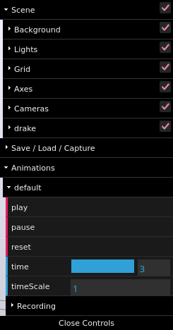

Click this link to see the paper in IEEEXplore!
Click this link to view the poster from ICRA!
Click this link to see the preprint on arXiv!
Accompanying video:
Below are interactive meshcat recordings of all plans from the paper Constrained Bimanual Planning with Analytic Inverse Kinematics, submitted to ICRA. This replicates Tables I and II of the paper, with each cell in the left table indicating the path length (in configuration space arc length), and each cell in the right table indicating online planning time (in seconds), and linking to its corresponding meshcat recording. Paths marked with an asterisk have collisions.
| Path Length (Configuration Space Arc Length) | |||
|---|---|---|---|
| Method | Top to Middle | Middle to Bottom | Bottom to Top |
| Trajopt | 4.58* | 2.85* | 4.35* |
| Atlas-BiRRT | 4.72 | 5.04 | 6.61 |
| Atlas-PRM | 5.43 | 5.67 | 6.99 |
| IK-Trajopt | 4.24* | 1.81* | 8.87 |
| IK-BiRRT | 9.91 | 8.69 | 11.42 |
| IK-PRM | 4.67 | 8.93 | 9.21 |
| IK-GCS | 2.09 | 3.32 | 5.62 |
| Online Planning Time (Seconds) | |||
|---|---|---|---|
| Method | Top to Middle | Middle to Bottom | Bottom to Top |
| Trajopt | 10.37 | 5.36 | 7.25 |
| Atlas-BiRRT | 140.82 | 155.91 | 201.32 |
| Atlas-PRM | 0.69 | 0.86 | 0.96 |
| IK-Trajopt | 19.48 | 18.70 | 22.29 |
| IK-BiRRT | 49.42 | 52.53 | 54.10 |
| IK-PRM | 0.46 | 0.64 | 0.61 |
| IK-GCS | 3.41 | 2.32 | 3.32 |
We also present IK-GCS plans where we can vary the grasp distance. Specifically, the IRIS regions have been generated to treat the grasp distance as a free parameter, and then this parameter is fixed at planning time.
| Top to Middle | Middle to Bottom | Bottom to Top | |
| IK-GCS | Small Large | Small Large | Small Large |
Click and drag the screen to rotate the camera. Holding shift will instead pan the camera. Scroll to zoom in or out.
To adjust playback of the trajectory, click the "Open Controls" button in the top right corner. You will see an image similar to below:
The controls for playback are under the "Animations" menu. "play" and "pause" start and stop the playback from the current timestamp, and "reset" sets the time to 0. "time" indicates the current time of the pose within the trajectory, and "timeScale" controls the playback speed (e.g. 0.5 is half speed). The values for "time" and "timeScale" are text fields, and can be edited directly.